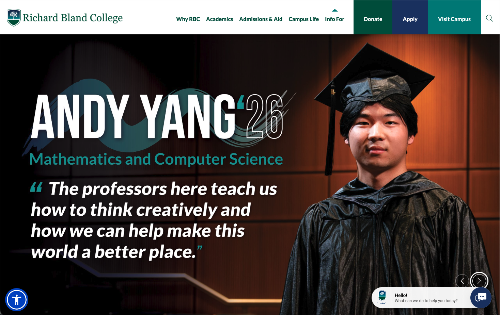
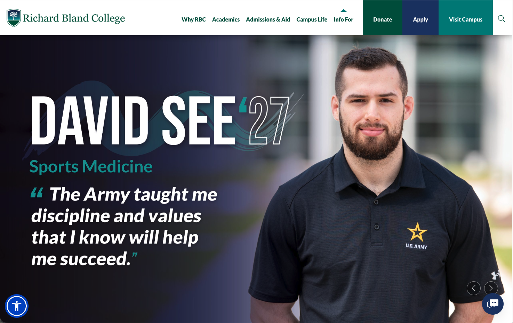
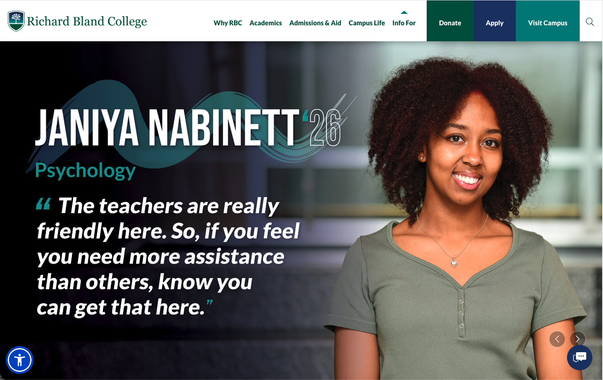
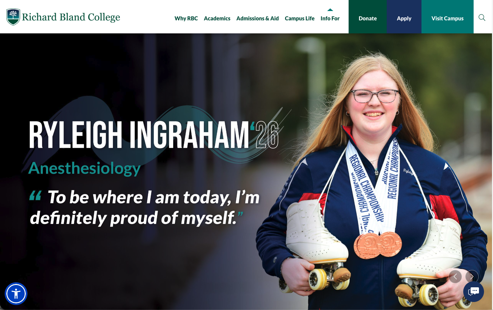
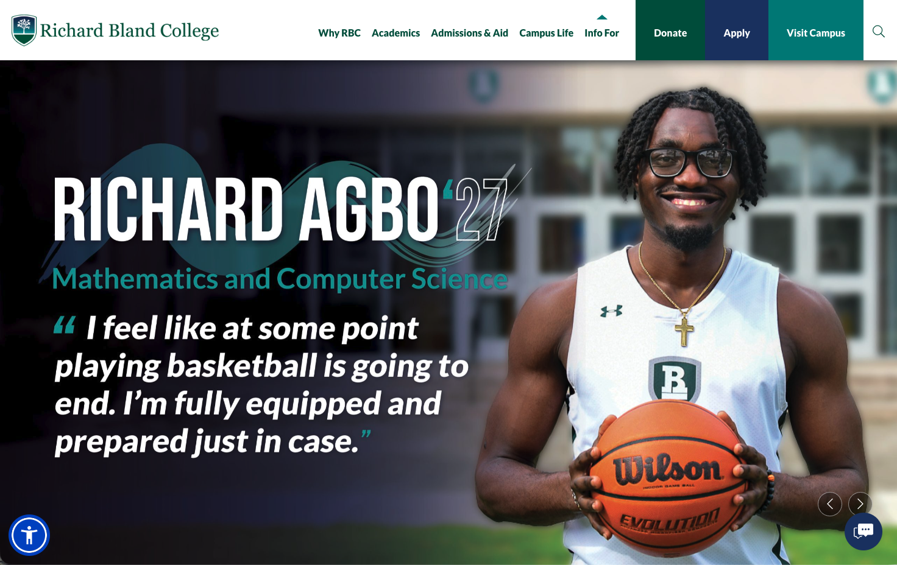
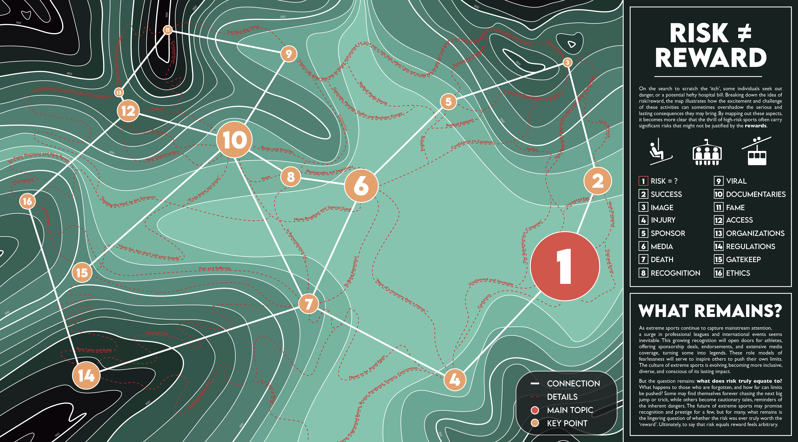
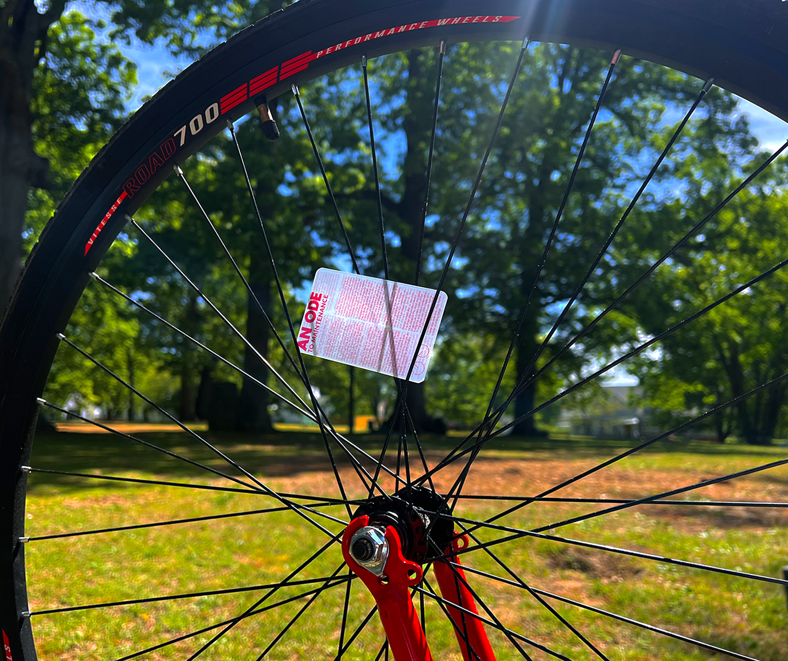
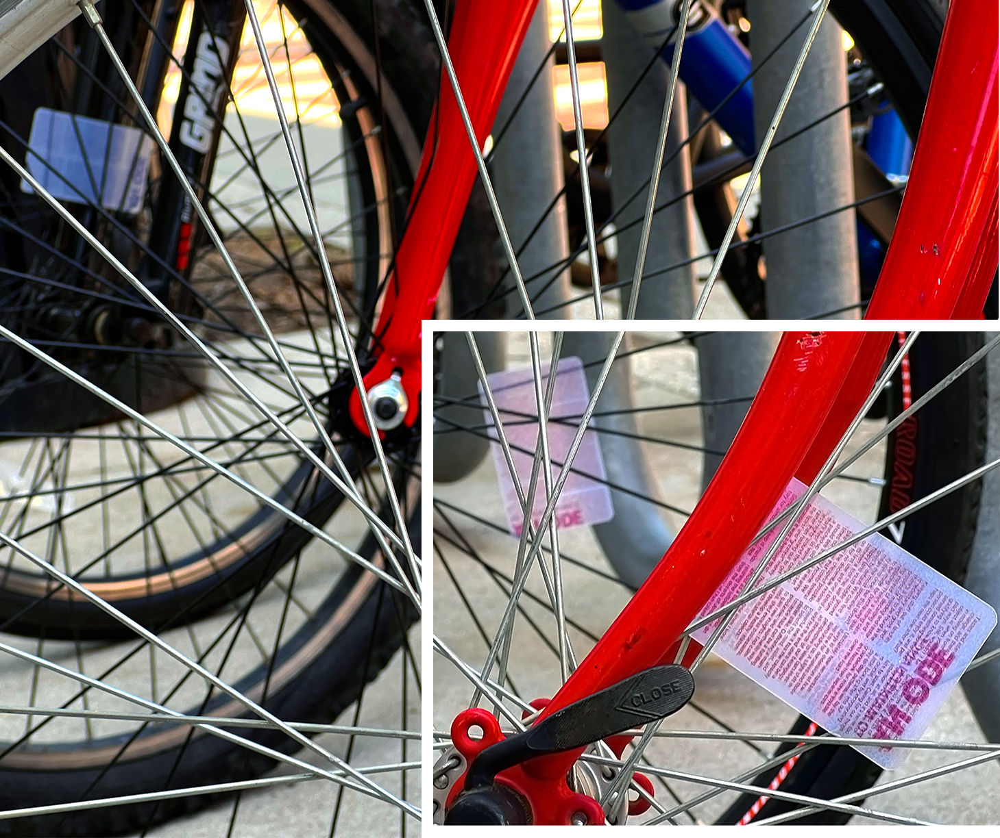
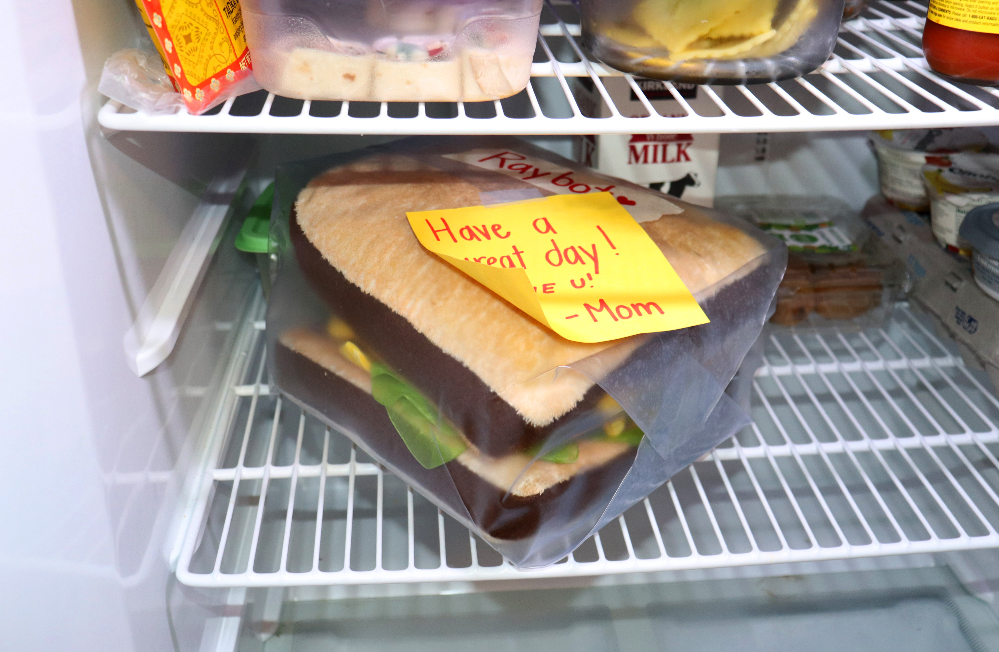
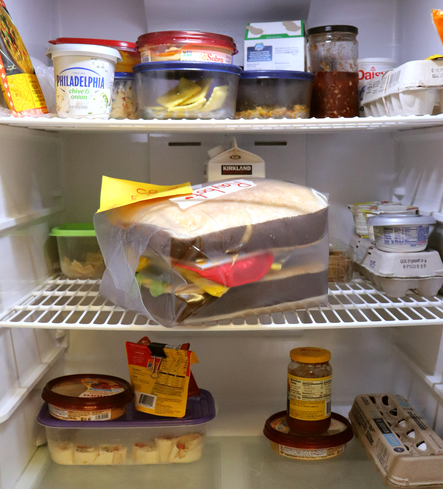

Raya Freeborn
Graphic Designer
& Art Director
Imagery functions as a universal language, communicating both information and feeling. Through print, branding, and interactive media, design becomes a tool for translating ideas into compelling visual narratives that engage audiences and make complex concepts accessible and memorable.
Experienced in developing visual identities, logos, iconography, and design systems that create consistency across print and digital platforms. A strong focus on typography, hierarchy, and visual cohesion ensures that every design effectively communicates its intended message.
Experienced working across cross-functional teams and incorporating feedback to strengthen ideas throughout the design process. Comfortable engaging from early concept development through final production, balancing creative exploration with practical implementation while adapting to the needs of fast-paced environments.
Inside RBC Magazine
2025-2026 — Editorial Design


Led the design and art direction for Inside RBC, the college’s official 70-page magazine, managing cohesive layouts and visuals for both print and digital editions. Oversaw the full production process from concept to final publication, ensuring consistent branding and storytelling across a large-scale, multi-section issue. Distributed worldwide to alumni, faculty, and board members, each edition communicates the college’s story with clarity and impact, incorporating custom illustrations, photography, and interactive elements to engage readers.
Richard Bland Banners
2026 — Web







Designed banner graphics and promotional visuals for the official Richard Bland College website and large-scale campus displays. Created engaging digital assets that supported institutional branding, campus announcements, events, and student-facing communications.
Richard Bland College Web Articles
2026 — Web


Designed graphics for RBC news articles, student highlights, and institutional announcements featured across official LinkedIn channels, newsletters, and web publications. Developed visual content that enhanced storytelling and showcased student achievements, research, and campus initiatives.
The Commonwealth Times
2025 - 2026 — Editorial + Print Design + Web


Designed 23 print issues for a student-run newsroom, leading editorial layout, typography, photo editing, and print production preparation under tight publication deadlines.
Sammy Scramble
2026 — Packaging + Card Design


Exploring how meaning shifts when information is translated through systems. This ‘translation machine’ chops sandwich recipes apart into a simple game.
Risk ≠ Reward
2026 — Editorial + Print Design



Risk ≠ Reward is a tactile, exploratory project that investigates the effects of risk and what it truly means to take one. The pocket-sized, Swiss-bound book combines research and design to examine the relationship between extreme sports, personal decision-making, and environmental responsibility. It includes “Leave No Trace” guidelines for wilderness preparation, highlighting sustainable practices, and is accompanied by three pamphlet-style bookmarks offering quick-reference tips for outdoor ethics. A thought map, inspired by a ski slope map, creatively visualizes key concepts around risk management, environmental impact, and the balance between adventure and responsibility.
Ready to Lead
2025 — Print Design


Designed the visual identity and layout for a hybrid digital business card with an embedded screen for Jesse Vaughan Productions, tailored for executive and administrative use. Produced a limited run of 50 units, ensuring consistent branding, high-quality visuals, and a seamless integration of digital and physical elements, creating a modern, functional networking tool.
An Ode To Maintenance
2025 — Video + Print Design


This project began during finals week, with a fish tank I couldn’t keep alive and a feeling of losing control. What I could maintain was my dad’s old bike: cleaning it, fixing it, keeping it going. That small routine became grounding.
Printed onto transparent bike spoke cards is Lucas Winzenburg’s essay, Debt of Disrepair: An Ode to Maintenance. The project turns maintenance into a feedback loop: neglect makes the message unreadable, while care brings clarity. The design only works if you care for it. Maintenance doesn’t just preserve the message. It is the message. Activated through a ride and shared repairs with the Bike Club @VCU, maintenance becomes attention, commitment, and practice.
The B.L.T.
2026 — Editorial + Print Design




Book Lettuce Tomato (B.L.T.) is a playful exploration of ideas as sustenance, this project takes inspiration from the classic BLT sandwich, which layers concepts like ingredients to create something digestible and satisfying.
Food for Thought
An homage to Chef Raya (c. 2015), this work reflects on the ways we consume ideas, both literally and figuratively. It blends culinary creativity with intellectual curiosity, inviting the viewer to consider how knowledge, like food, can be tasted, savored, and digested.
The Eater's Digest
Continuing the exploration, this piece transforms the act of reading into a sensory experience, emphasizing the interplay between literal consumption and metaphorical ingestion of ideas. It’s both a tribute to culinary craft and a meditation on how ideas nourish the mind.
Rigid
2024 — Poster Series